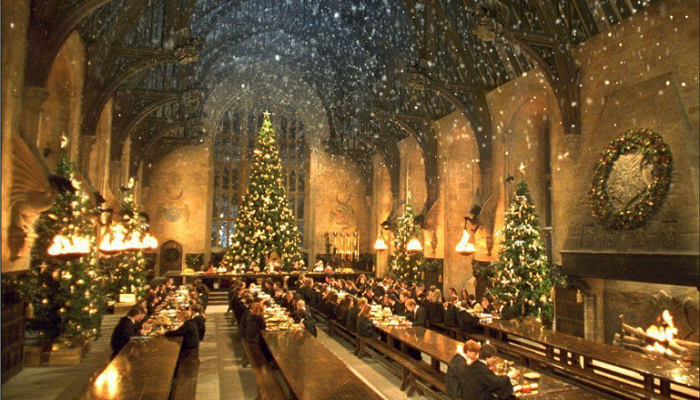
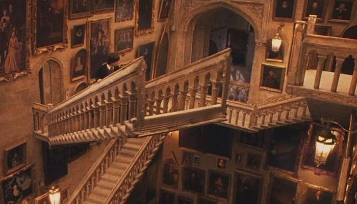
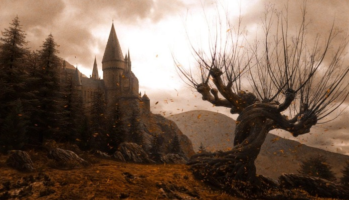
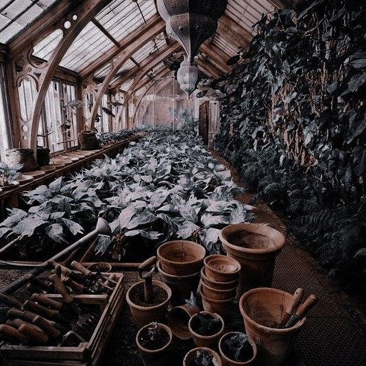
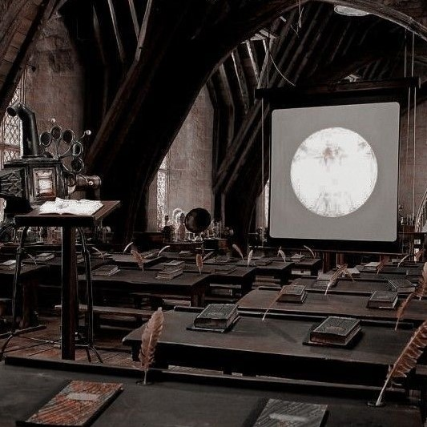
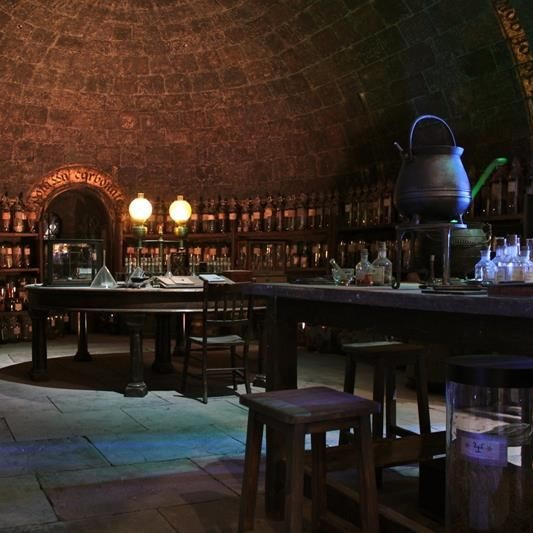
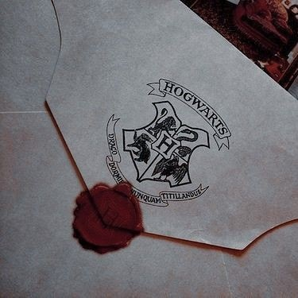
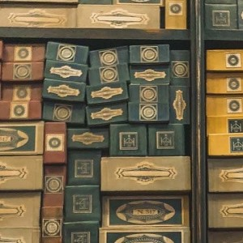
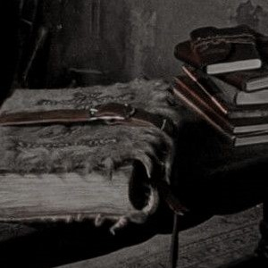
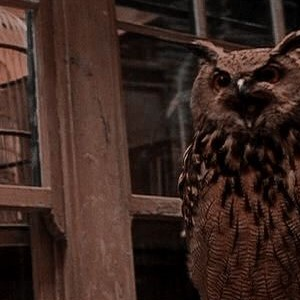

About the School
  Hogwarts is a very traditional British secondary boarding school, but magical education necessitates many differences. There are few modern facilities, indeed the castle has no electricity. This is largely due to the presence of high levels of magical energy fields that cause electrical and electronic devices to malfunction. Heating is provided by fireplaces and stoves maintained by a large staff of house elves. House elves also prepare three meals a day for students and staff as well as several feasts throughout the year. The food is varied, excellent and plentiful. The castle does have a relatively modern plumbing system including public rest rooms and at least one luxurious magical bath. Letters and parcels are usually delivered to students during breakfast in the Great Hall by owls who bring them directly to individuals. Both school and privately owned owls reside in a common owlery.
School's Classes
  The school has severed subjects ministered by the best teachers of the wizardry world. The subjects available at Hogwarts are given below:
- Ancient Runes
- Arithmancy
- Astronomy
- Care of Magical Creatures
- Charms
- Defence Against the Dark Arts
- Divination
- Flying Lessons
- Herbology
- History of Magic
- Muggle Studies
- Potions
- Transfiguration
School's Admission
The admission to Hogwarts is selective, in that children who show magical ability will automatically gain a place. Every year, a teacher sends a letter to the magical born children who are turning eleven. Acceptance or refusal of a place at Hogwarts must be posted by 31 July. Letters to Muggle-born witches and wizards, who may not be aware of their powers and are unfamiliar with the concealed wizarding world, are delivered in person by a member of Hogwarts staff, who then explains to the parents or guardians about magical society, and reassures them regarding this news.
Equipment Required
  Each student is allowed to bring an owl, a cat or a toad. Along with the acceptance letter, first-year students are sent a list of required equipment which includes a wand, subject books, a standard size 2 pewter cauldron, a set of brass scales, a set of glass or crystal phials, a kit of basic potion ingredients (for Potions), a telescope (for Astronomy) and a broomstick. The Hogwarts uniform consists of plain work robes in black, a plain black hat, a pair of protective gloves, and a black winter cloak with silver fastenings. Each uniform must contain the wearer's nametag.